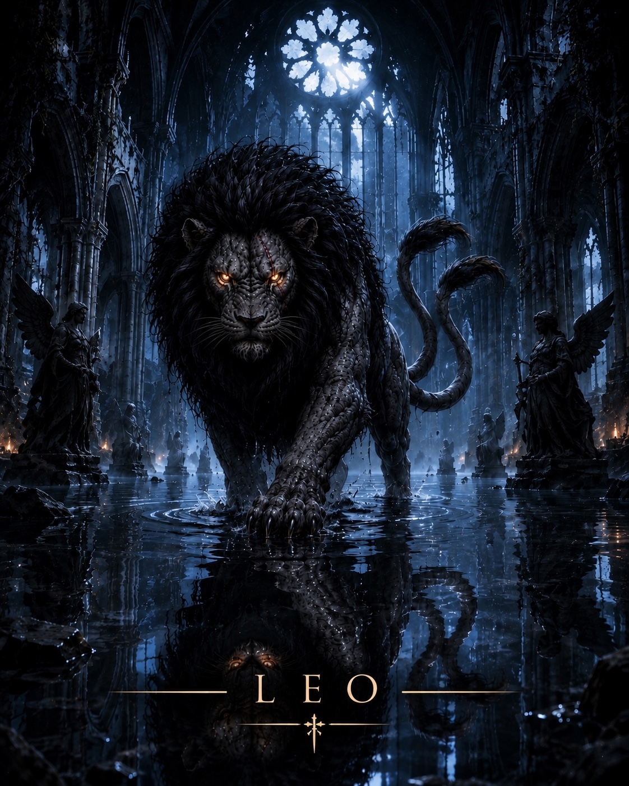
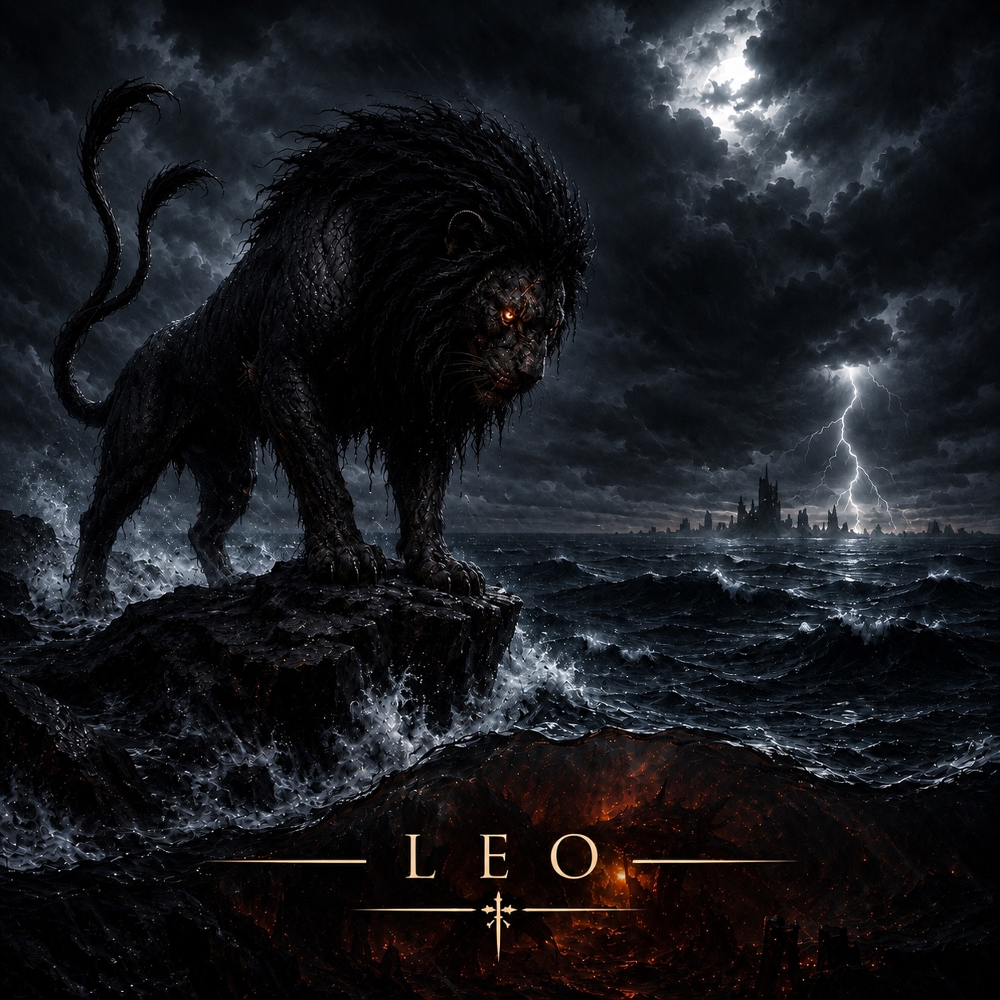
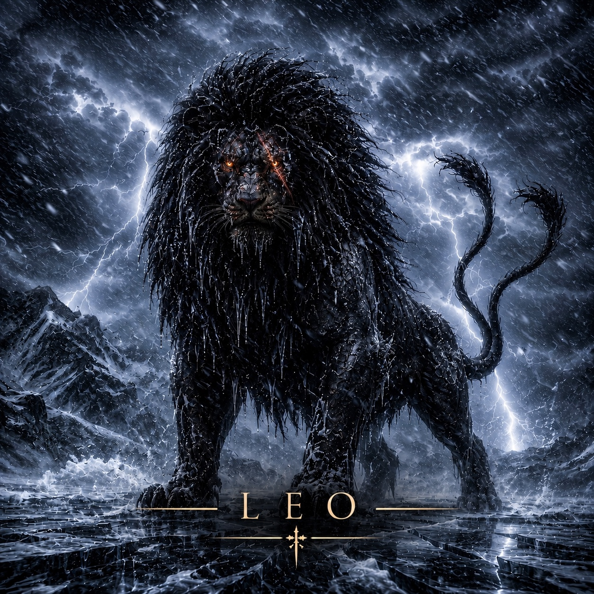
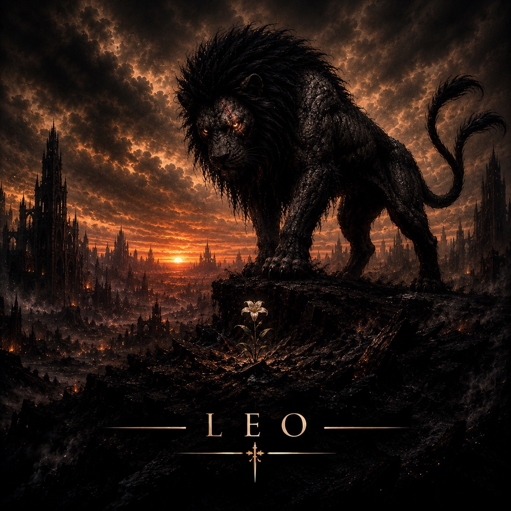
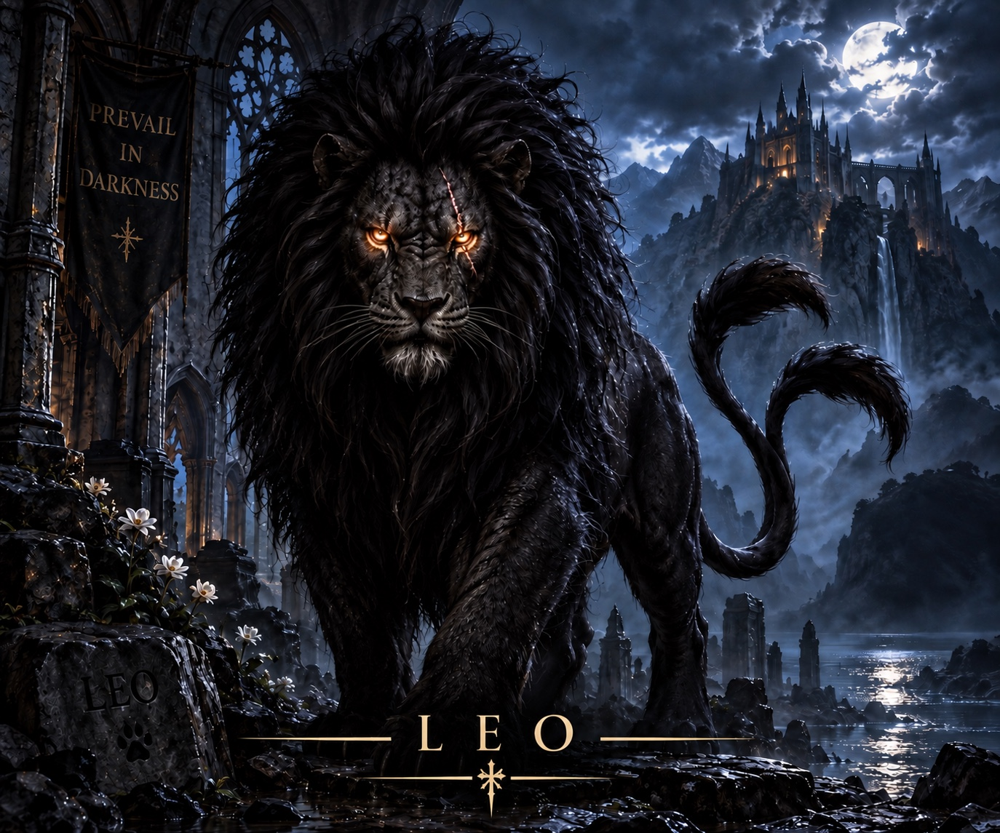

<!doctype html>

<html>

<head>

<meta charset="utf-8">

<meta name="viewport" content="width=device-width,initial-scale=1">

<title>Leo — Prevail In Darkness</title>

<meta name="description" content="Leo — the guardian of Prevail In Darkness.">

<link rel="stylesheet" href="style.css">

<style>

.leo-intro{

  max-width:760px;

  margin:0 auto 45px;

  text-align:center;

}

.leo-intro p{

  font-size:20px;

  line-height:1.7;

  color:var(--ink);

}

.leo-gallery{

  display:grid;

  grid-template-columns:repeat(2,1fr);

  gap:28px;

}

.leo-art{

  margin:0;

}

.leo-art img{

  display:block;

  width:100%;

  height:auto;

  border:1px solid #393631;

}

@media(max-width:720px){

  .leo-gallery{

    grid-template-columns:1fr;

    gap:24px;

  }

  .leo-intro p{

    font-size:18px;

  }

}

</style>

</head>

<body>

<script src="site.js"></script>

<script>

document.body.innerHTML=head('LEO')+`

<main>

<section class="leo-intro">

<div class="kicker">THE GUARDIAN</div>

<h1 class="section-title">LEO</h1>

<p>

Leo has been around since day one. When he doesn’t appear on the artwork himself, he leaves his mark of approval — a paw print.

</p>

</section>

<section class="leo-gallery">

<figure class="leo-art">



</figure>

<figure class="leo-art">



</figure>

<figure class="leo-art">



</figure>

<figure class="leo-art">



</figure>
<figure class="leo-art">

  

</figure>
</section>

</main>

`+footer();

</script>

</body>

</html>
